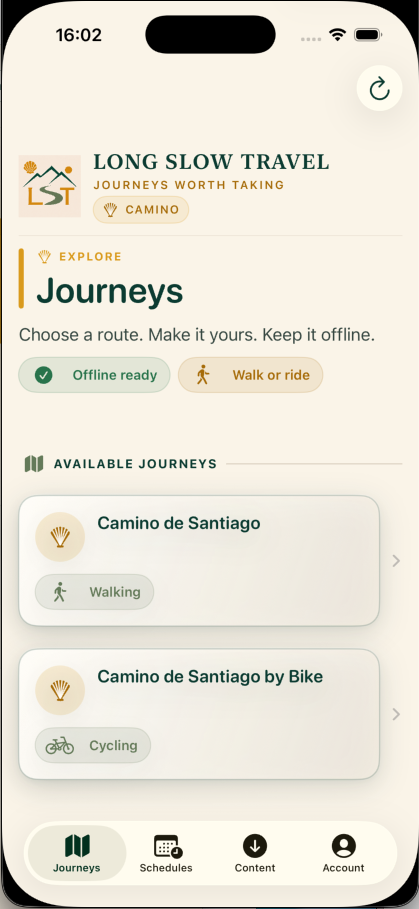
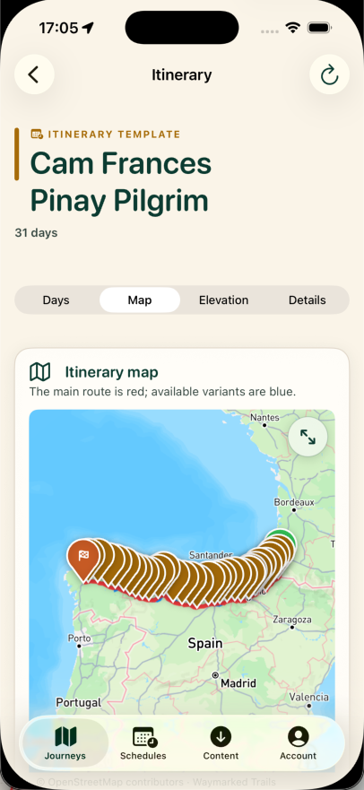
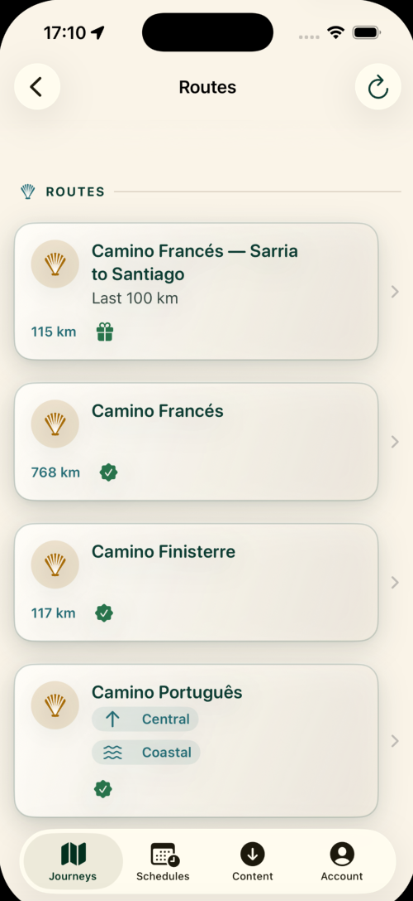
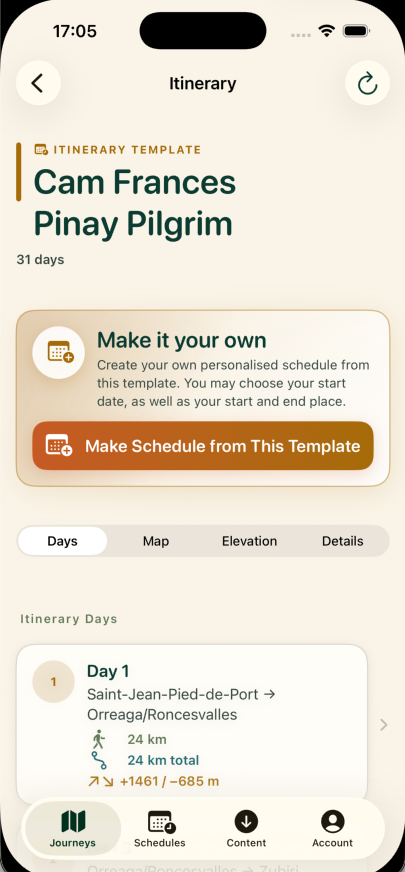
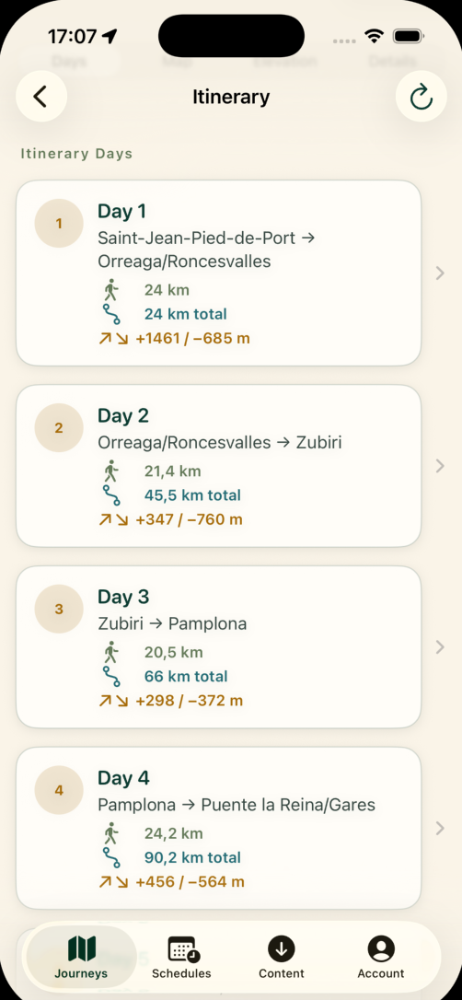
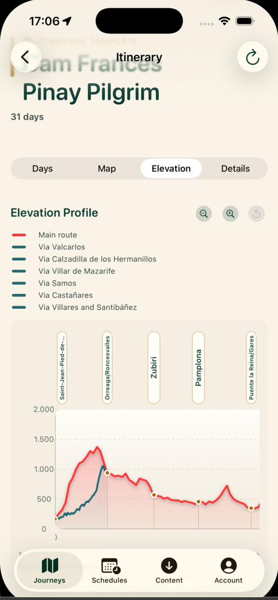
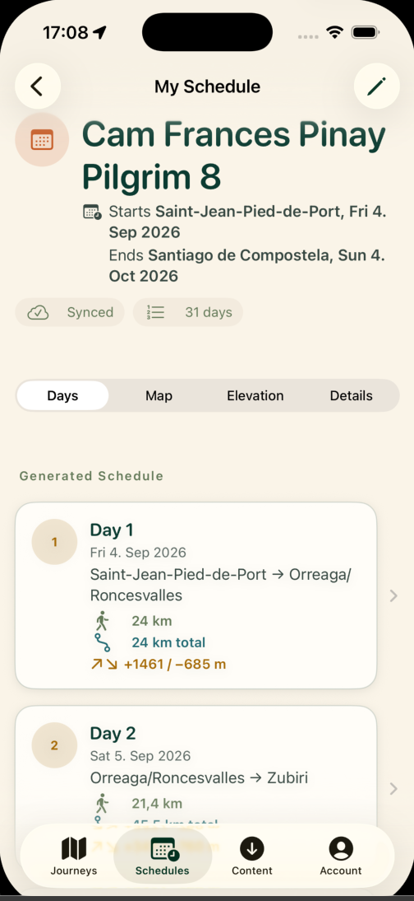

Plan your way
Stages that fit your journey
Start with a suggested itinerary, then split long days, add rest days, adjust dates, and make the Camino yours.
Shape each stage around the days you have, keep the details that matter close, and carry your plan even when the signal disappears.

LST Camino Planner brings your stages, route, terrain, places, services, and practical accommodation details into one calm view.
Plan your way
Start with a suggested itinerary, then split long days, add rest days, adjust dates, and make the Camino yours.
Know the day ahead
See the walking line, distance, elevation, and the towns along the way before you shoulder your pack.
Made for the trail
Installed route details and your schedules stay on your iPhone, ready for the stretches between reliable connections.
Move from the big picture to the details you need at the next turn—without turning the Camino into a spreadsheet.
Begin with a proven stage pattern or shape your own.
Review terrain, services, places, and route options.
Keep the plan close when reception gets patchy.

Review your itinerary day by day, then explore the elevation profile before you leave.





Try the last 100 km of the Camino Francés at no cost. Add complete routes as separate one-time purchases when you are ready.
The final 100+ km of the Camino Francés, with the route and planning essentials included.
The classic journey west across northern Spain, ready to shape around your own pace.
Continue west from Santiago to the Atlantic coast, with itineraries for Finisterre, Muxía, or both.
One route pack with two complete ways from Porto to Santiago.
Built by Aurea Moemke, creator of Camino Pilgrim—the free Android Camino companion available from 2014 to 2025.
You can explore the free sample and create offline schedules as a guest. An account is only needed for route purchases, restore access, and schedule sync.
Read our privacy policy
Plan with care, walk with confidence, and let the day unfold.
LST Camino Planner support